ITEC 101: Introduction to Information Technology
Mr. Seng Theara
Learning Outcome
Storage System
Your laptop suddenly stops working!
Imagine that you have spent two weeks preparing your final project. You saved everything on your laptop.Tomorrow is the submission deadline, but tonight your laptop stops working.
Your laptop suddenly stops working!
Imagine that you have spent two weeks preparing your final project. You saved everything on your laptop.Tomorrow is the submission deadline, but tonight your laptop stops working.
Are your files lost forever?
Where were your files stored?
What could you have done to prevent losing your work?
Storage Fundamental
Storage Fundamental
Where does your computer keep its data?
Storage Fundamental
Where does your computer keep its data?
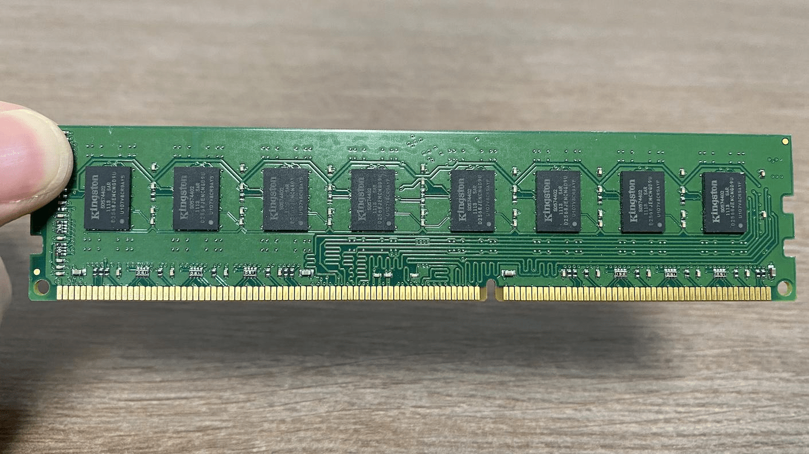
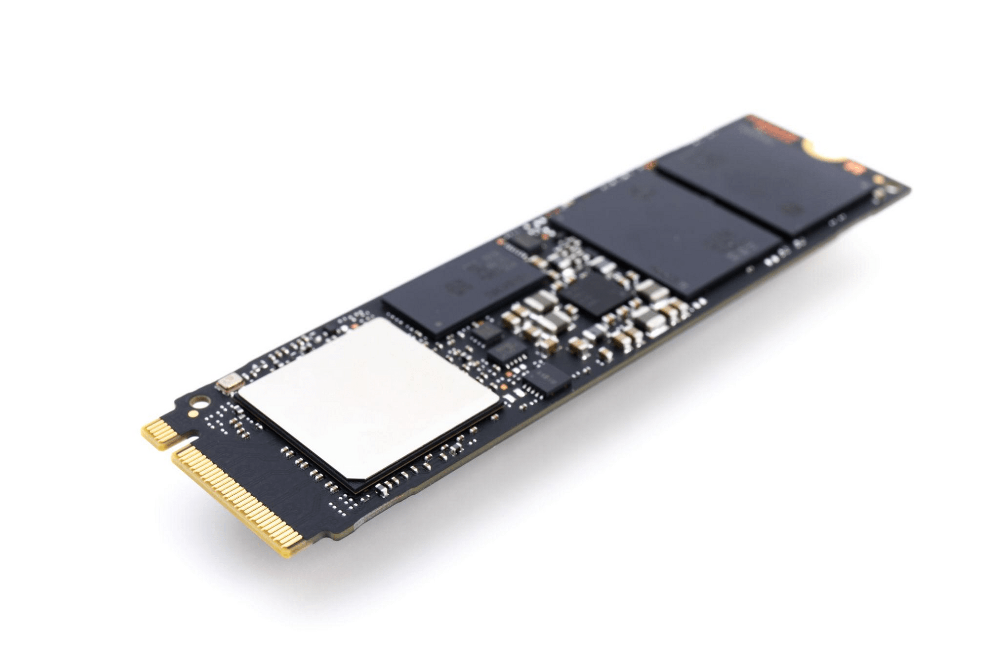
RAM
SSD/HDD
Storage Fundamental
Where does your computer keep its data?
RAM
SSD/HDD
Stores OS, apps, and files
If I upgrade my laptop from 8 GB to 16 GB RAM, will I have more space to save photos?
If I upgrade my laptop from 8 GB to 16 GB RAM, will I have more space to save photos?
No. More RAM can help with running programs, but it does not increase permanent storage capacity.
Storage Device vs. Storage Media
Storage Device vs. Storage Media
Storage medium: The physical material where data is recorded.
Storage device: The hardware used to access or manage the storage medium.
Storage Devices vs. Storage Media
Storage medium: The physical material where data is recorded.
Storage device: The hardware used to access or manage the storage medium.
Medium
Device
Storage Devices vs. Storage Media
Medium
Device
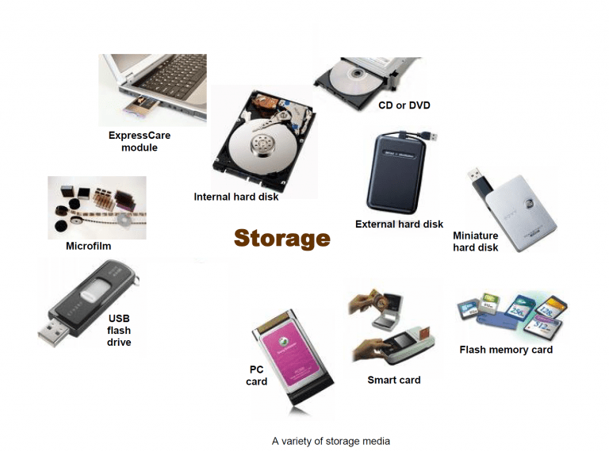
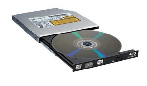
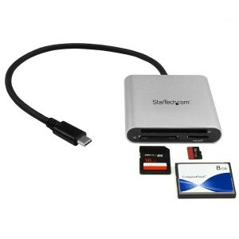
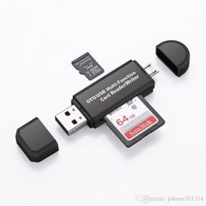
Classify the Storage
Classify each as Volatile, Nonvolatile or Remote Storage
| RAM | |
| Internal SSD | |
| USB flash drive | |
| External HDD | |
| Google Drive | |
| SD card |
Classify the Storage
Classify each as Volatile, Nonvolatile or Remote Storage
| RAM | Volatile memory |
| Internal SSD | Nonvolatile local storage |
| USB flash drive | Nonvolatile local storage |
| External HDD | Nonvolatile local storage |
| Google Drive | Remote/cloud storage |
| SD card | Nonvolatile local storage |
HDD vs. SSD
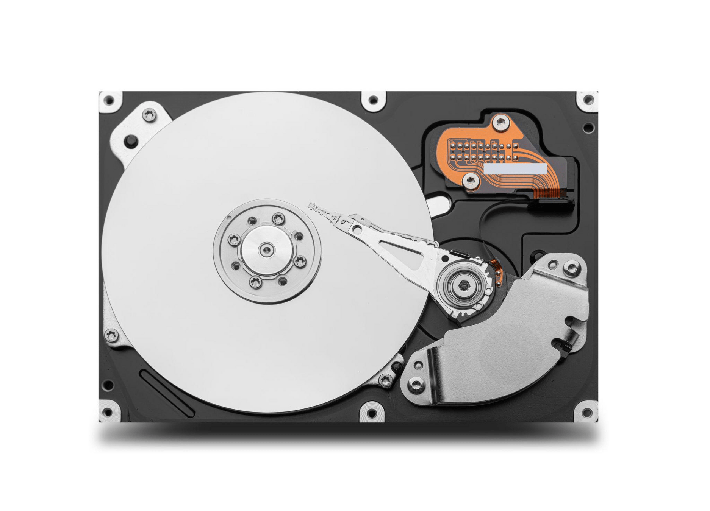
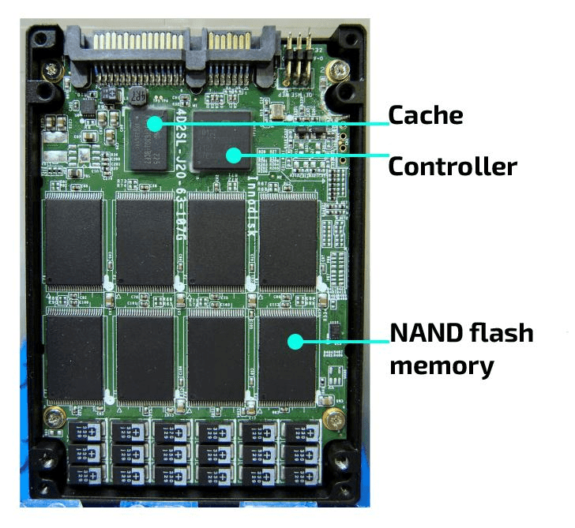
HDD
SSD
HDD vs. SSD
HDD
SSD
Spinning magnetic platters and moving read/write heads
Flash memory chips, no moving parts
HDD vs. SSD
HDD
SSD
|
Magnetic technology |
Flash memory |
|
Moving mechanical parts |
No moving parts |
|
Generally slower access |
Generally faster access |
|
Usually cheaper per GB |
Usually more expensive per GB |
|
More vulnerable to shocks during operation |
More resistant to mechanical shocks |
HDD vs. SSD
True or False: SSDs never fail because they have no moving parts.
HDD vs. SSD
True or False: SSDs never fail because they have no moving parts.
False. SSDs can fail because of controller problems, electronic faults, firmware issues
Partitions and File Systems
Your computer has one physical SSD, but Windows displays C: and D:. How is that possible?
Partitions and File Systems
A student has a 64 GB USB drive formatted as FAT32.
They want to copy a single 6 GB video file. The USB drive has enough free space, but Windows reports that the file is too large for the destination file system.
Why does the error occur?
Is the USB drive broken?
What could solve the problem?
Partitions and File Systems
A student has a 64 GB USB drive formatted as FAT32.
They want to copy a single 6 GB video file. The USB drive has enough free space, but Windows reports that the file is too large for the destination file system.
FAT32 has a maximum individual file size of approximately 4 GB. A compatible file system such as exFAT can support larger files.
Partitions and File Systems
A student has a 64 GB USB drive formatted as FAT32.
They want to copy a single 6 GB video file. The USB drive has enough free space, but Windows reports that the file is too large for the destination file system.
FAT32 has a maximum individual file size of approximately 4 GB. A compatible file system such as exFAT can support larger files.
NTFS - widely used for Windows system drives
FAT32 - broadly compatible, but has a 4 GiB maximum individual file size
exFAT - often used for removable storage and large files
Optical discs and flash storage
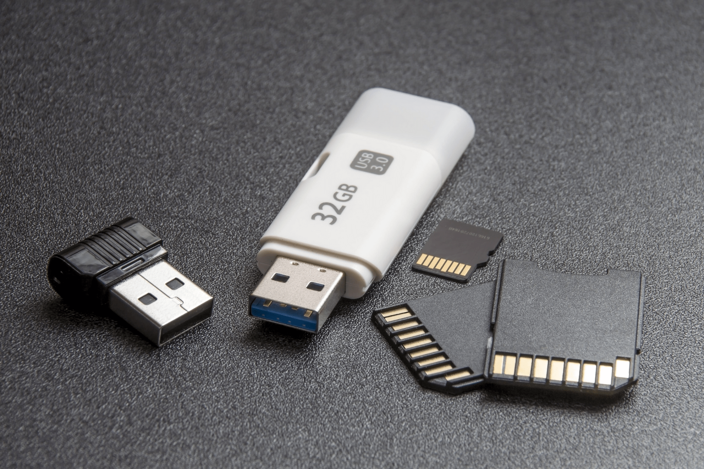
Optical Discs
Flash Storage
Optical discs and flash storage
Optical Discs
Flash Storage
CD, DVD, Blu-ray
USB flash drives
Storage type Typical capacity
|
CD |
700 MB |
|
Single-layer DVD |
4.7 GB |
|
Single-layer Blu-ray |
25 GB |
|
USB flash drive |
Varies widely |
Why are some optical disc read-only?
Why are some optical disc read-only?
ROM: Read-only
R: Recordable once
RW / RE: Rewritable
Why are some optical disc read-only?
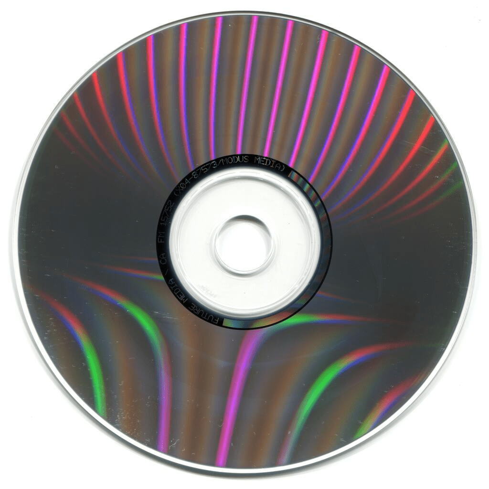
ROM - Read-Only
A pre-recorded software installation DVD or movie disc.
You can read the data, but you cannot change or delete its contents.
Why are some optical disc read-only?
ROM - Read-Only
A pre-recorded software installation DVD or movie disc.
You can read the data, but you cannot change or delete its contents.
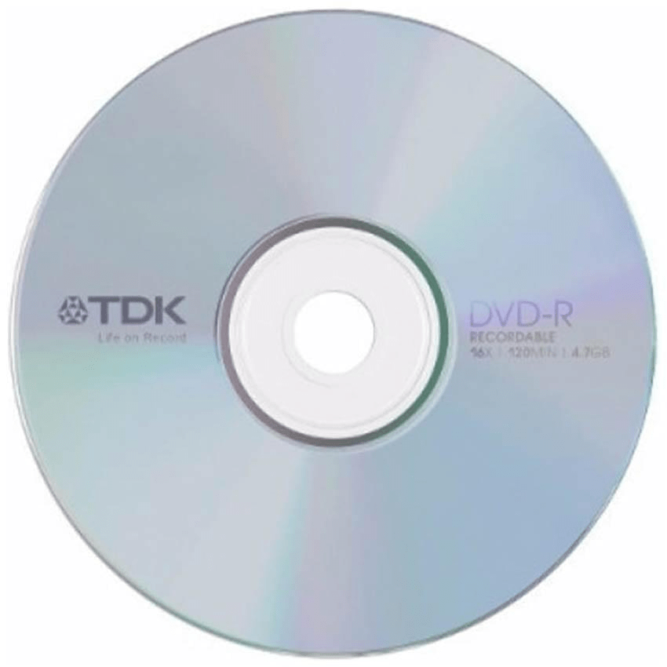
R - Recordable
You can record your photos, music, or documents onto the disc. Once an area is recorded, it cannot be erased and rewritten.
Some discs support adding more files in later sessions if space remains and the disc hasn't been finalized.
Why are some optical disc read-only?
ROM - Read-Only
A pre-recorded software installation DVD or movie disc.
You can read the data, but you cannot change or delete its contents.
R - Recordable
You can record your photos, music, or documents onto the disc. Once an area is recorded, it cannot be erased and rewritten.
Some discs support adding more files in later sessions if space remains and the disc hasn't been finalized.
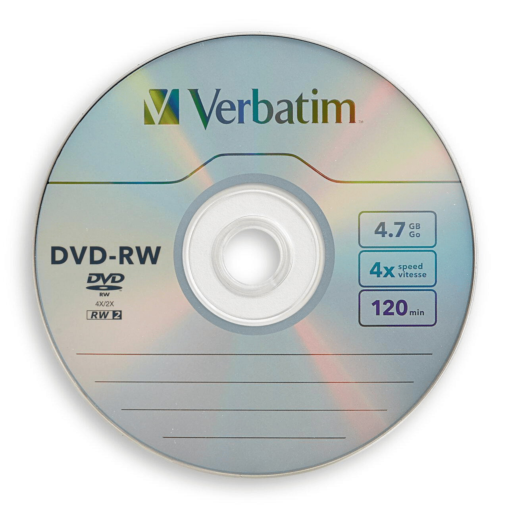
Example: CD-RW, DVD-RW, or BD-RE (Blu-ray).
You can record data, erase it, and record new data repeatedly, subject to the disc's rewrite endurance.
RW / RE - Rewritable
How do storage device find your data?
How do storage device find your data?
1. Random Access (Direct Access)
Random access allows a computer to retrieve data from a particular location without reading all the preceding data.
For example, imagine you have 100 photos stored on an SSD. You want to open photo number 85.With random access, the computer can directly locate and retrieve photo 85 without first reading photos 1–84.
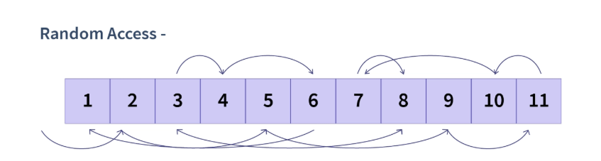
How do storage device find your data?
1. Random Access (Direct Access)
Random access allows a computer to retrieve data from a particular location without reading all the preceding data.
For example, imagine you have 100 photos stored on an SSD. You want to open photo number 85.With random access, the computer can directly locate and retrieve photo 85 without first reading photos 1–84.
SSD, HDD, USB flash driveSD , DVD, and Blu-ray discs
How do storage device find your data?
2. Sequential Access
Sequential access retrieves data in order. To reach a particular location, the storage medium must move through the preceding positions.
For example, imagine your data is stored on a magnetic tape.
If the data you want is near the end of the tape, the drive must wind the tape forward until it reaches the correct location.
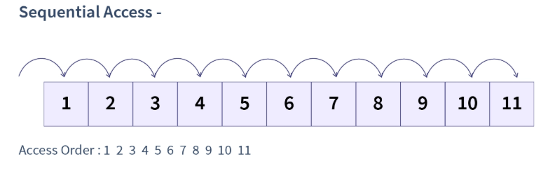
How do storage device find your data?
2. Sequential Access
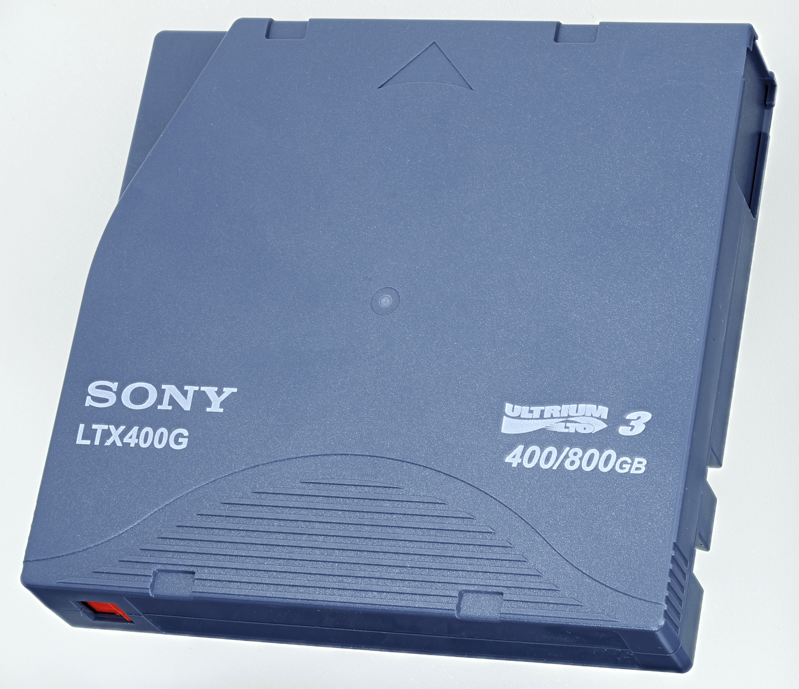
Magnetic tape drives (LTO tape)
Older cassette-based data storage systems
Where does your file go when you upload it to Google Drive?
Where does your file go when you upload it to Google Drive?
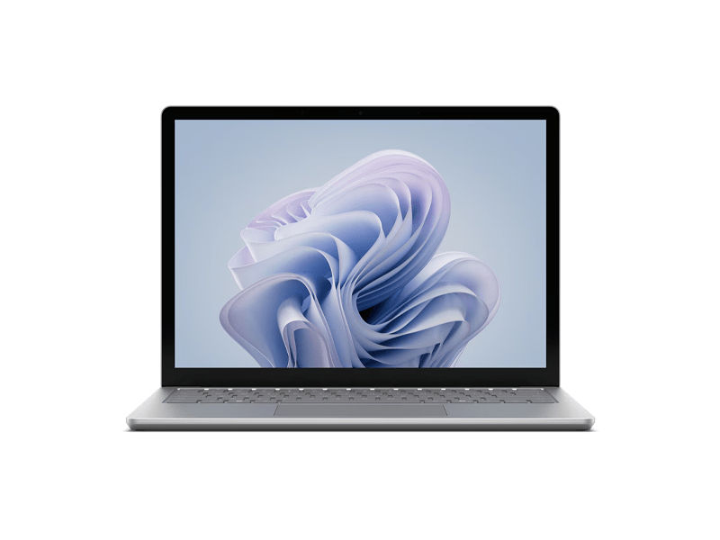
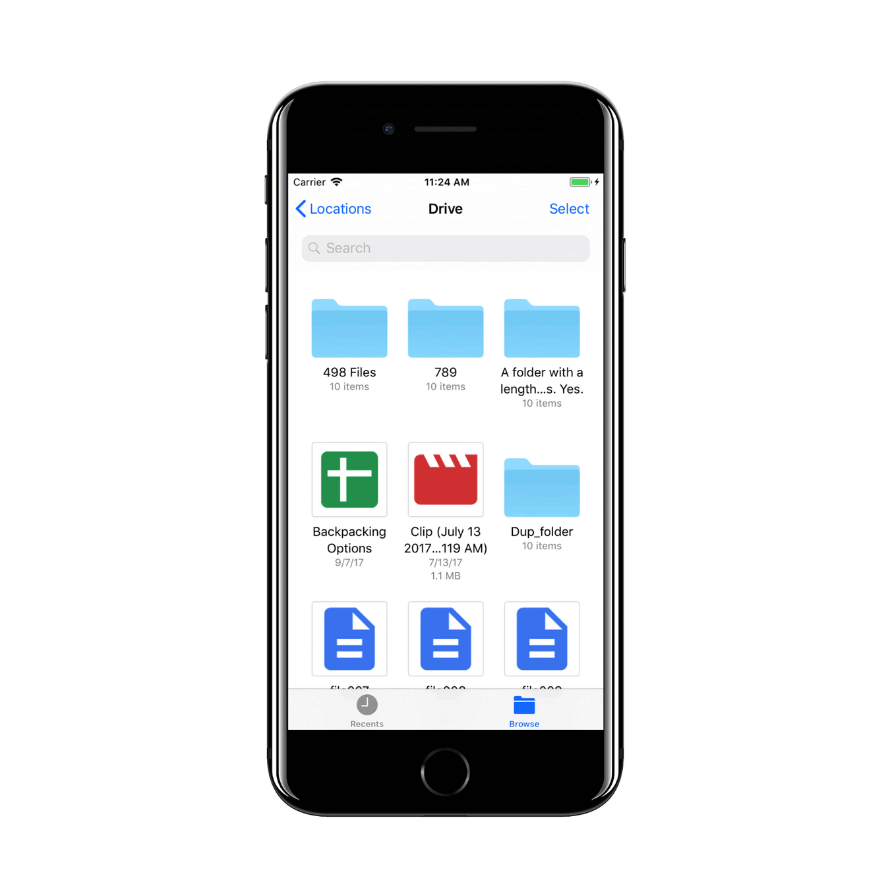
Your PC
Other Device
Internet
Internet
When you upload a file to Google Drive, it is transferred through the Internet and stored on physical storage devices in Google's data centers.
Data Center
Example of Cloud Storage Sevice
Example of Cloud Storage Sevice
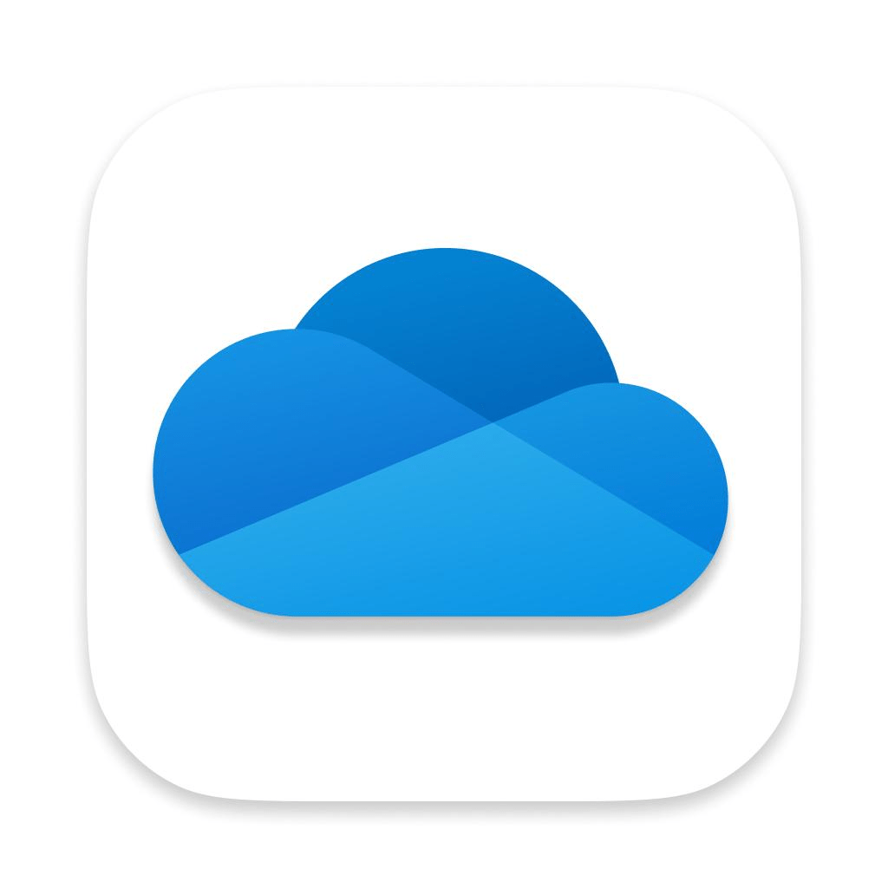
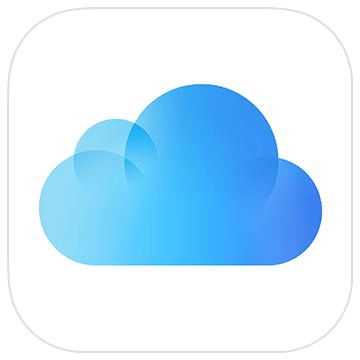
Cloud Storage: Benefits vs. Limitations
Cloud Storage: Benefits vs. Limitations
Benefits Limitations
|
Access files anytime, anywhere |
Internet connection usually required |
|
Easy file sharing and collaboration |
Slow uploads/downloads with poor Internet |
|
Synchronizes files across devices |
Accidental deletions may synchronize |
|
Helps recover files if a device fails |
Not a complete backup solution |
|
No need to buy physical storage hardware. |
Limited free storage; subscription costs |
|
Easy to increase storage capacity |
Ongoing costs for larger storage |
|
Provider maintains storage infrastructure |
Privacy and security concerns |
|
Access files from multiple devices |
Service outages may restrict access |
NAS
NAS
Network Attaced Storage
NAS
NAS (Network Attached Storage) is a storage system accessible over a network.
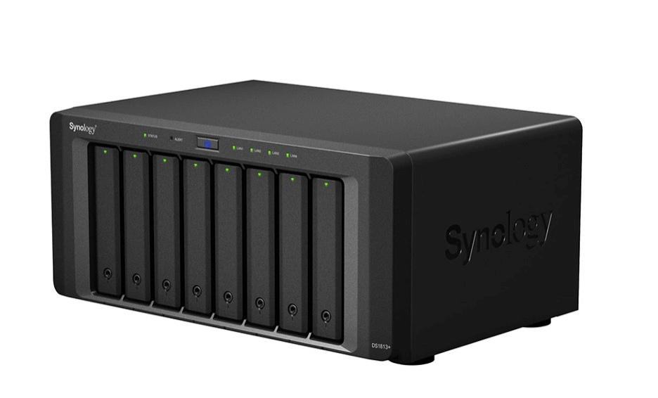
Example: A small office uses a NAS so several computers can access shared files.
NAS is a storage-sharing solution, not automatically a backup.
RAID
RAID 0 (Striping): Uses multiple drives together to improve performance and combine capacity.
RAID 1 (Mirroring): Stores identical data on two drives to protect against a single drive failure.
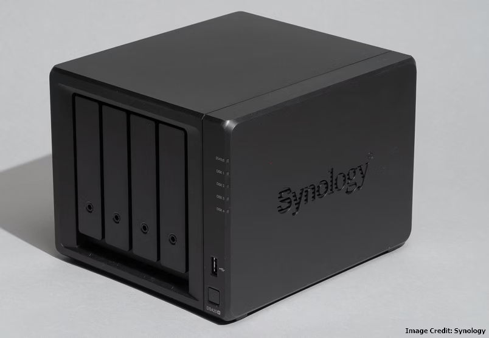